SMMU
[toc]
什么是SMMU，它是做什么的？
系统内存管理单元 (SMMU, System Memory Management Unit) 是计算机体系结构中的一个关键组件，尤其在复杂的系统中，例如多核处理器、虚拟化环境和高性能计算系统中。它主要负责管理和控制系统内存访问的安全性和有效性。具体来说，SMMU 的主要功能包括以下几个方面：
- 地址转换：
- 虚拟地址到物理地址的映射：SMMU 负责将设备生成的虚拟地址转换为实际的物理地址。这种地址转换使得不同设备和软件可以在各自的地址空间中操作，而不需要了解物理内存的具体布局。
- I/O 虚拟化：SMMU 支持 I/O 设备的虚拟化，使多个虚拟机可以安全地共享同一物理设备。这对于虚拟化环境尤为重要，因为它可以隔离不同虚拟机的内存访问，防止相互干扰。
- 内存保护：
- 访问权限控制：SMMU 通过设置访问权限，确保只有被授权的设备或进程可以访问特定的内存区域。这有助于防止恶意软件或错误的设备访问系统中的敏感数据。
- 防止地址空间冲突：SMMU 能够防止不同设备或进程之间的地址空间冲突，确保每个设备或进程都在各自的受控地址空间内操作。
- 缓存一致性：
- 保持缓存一致性：SMMU 通过缓存一致性协议确保多个处理器和 I/O 设备之间的数据一致性。对于高性能计算和数据密集型应用，这一特性非常重要。
- 性能优化：
- 减少地址转换开销：SMMU 通过高效的地址转换机制，减少了设备和处理器进行地址转换的开销，从而提升系统性能。
- 支持高级内存管理功能：SMMU 提供了高级的内存管理功能，如大页支持、多级页表等，有助于优化内存使用和提升系统性能。
安全，地址可以不连续。
MMU-700是什么
在ARM 体系中，SMMU 是指为IO设备提供地址翻译的模块，其他体系结构下可能叫IOMMU等，而MMU-700是指具体的IP 产品。
所以有两份文档，一个是SMMU Spec，一个是MMU-700 TRM。
MMU与SMMU区别
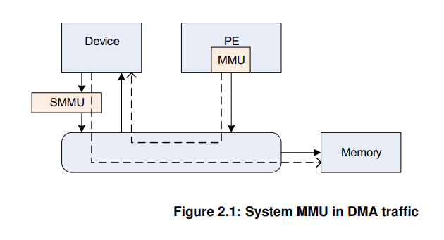
SMMU位置
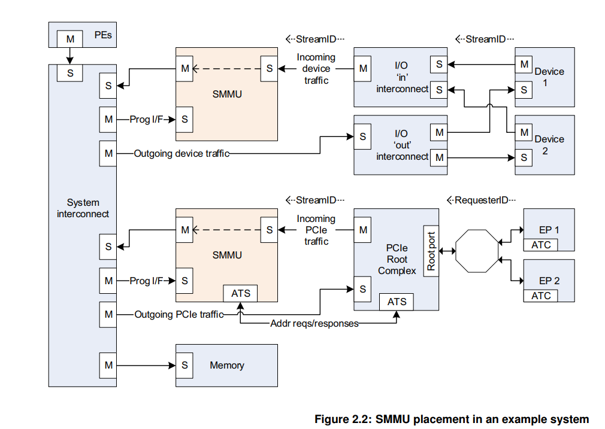
1）上面SMMU给（使能DMA）device提供地址转换功能。device1使用VA访问内存，smmu根据VA计算对应PA，访问物理内存；
2）下面SMMU一对一连接PCIe Root Complex (which itself hosts a network of endpoints)设备，为PCIE设备提供虚拟地址（通过ATS）功能。
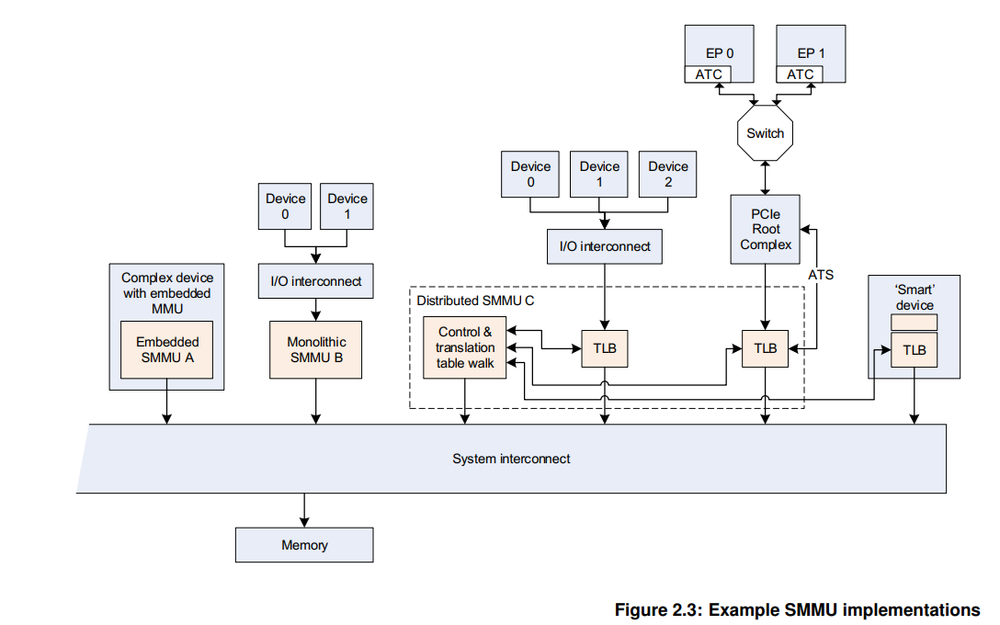
1）SMMU A为complex device提供地址翻译功能；
2）SMMU B为多个device（使用同个I/O，经过DMA）提供地址翻译功能；
3）SMMU C并行提供多条路径，多个功能，以提供更高带宽，包括：
a. central translation table walker，包括主接口（用于获取翻译地址、初始化页表结构和队列）以及从接口（用于配置访问权限）。
b. 为多个device设备和PCIe提供虚拟化能力。
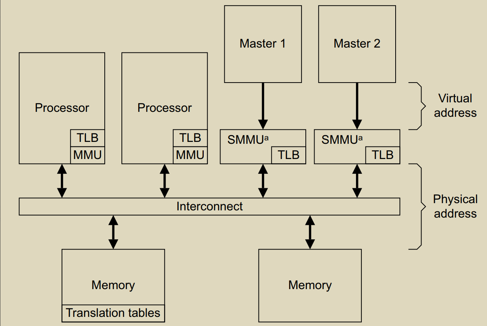
MMU-700 组成
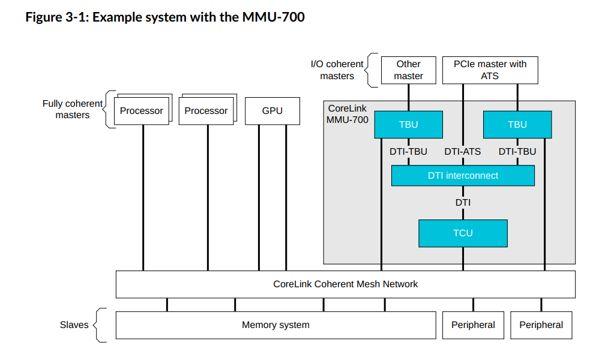
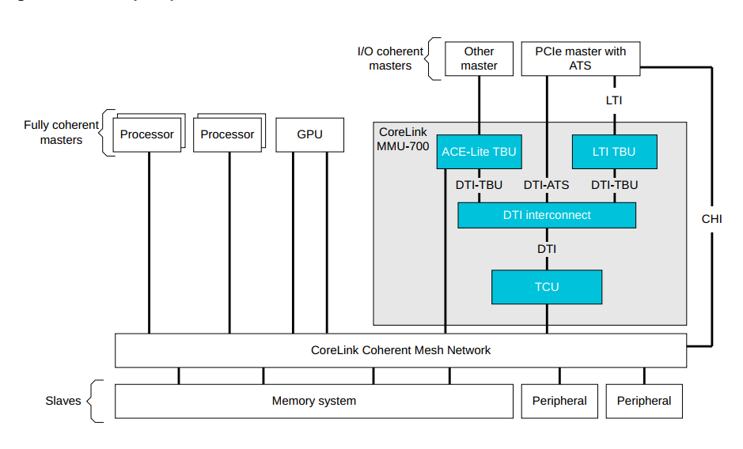
The MMU‑700 contains the following key components: Translation Buffer Unit (TBU) The TBU contains Translation Lookaside Buffers (TLBs) that cache translation tables. The MMU‑700 implements a TBU that can be connected to single master or multiple masters. It is also possible to connect multiple TBUs to a single master to improve performance. These TBUs are local to the corresponding master and can be one of the following:
- ACE‑Lite TBU
- LTI TBU
Translation Control Unit (TCU) The TCU controls and manages the address translations. The MMU‑700 implements a single TCU. In MMU‑700-based systems, the AMBA® DTI protocol defines the standard for communicating with the TCU. See the AMBA® DTI Protocol Specification.
DTI interconnect The DTI interconnect connects multiple TBUs to the TCU
TBU 有两种类型，TBU ACE模式，可以把PA的transaction直接往下发，而c2000采用的是TBU LTI模式，不会把transaction往下发，而是把PA返回给pcie controller
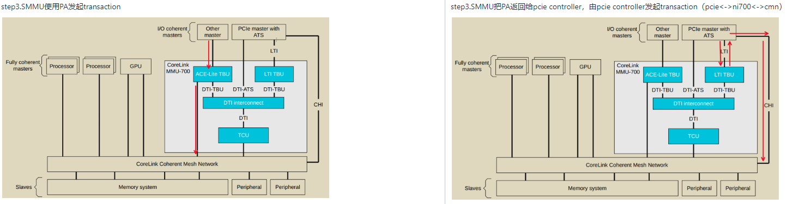
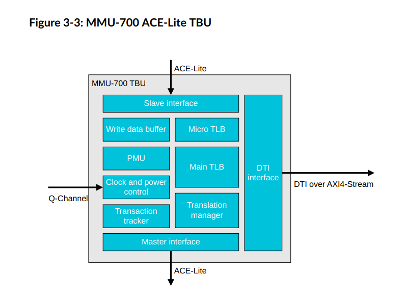
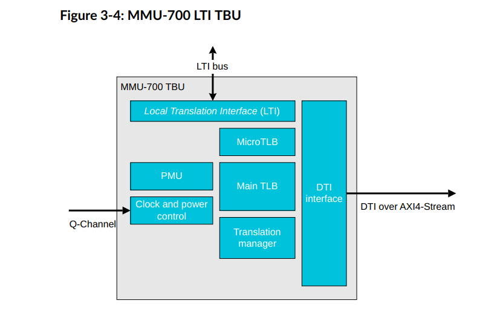
TLB是什么
The TBU contains Translation Lookaside Buffers (TLBs) that cache translation tables.
TBU里有两级cache，一个micro TLB一个是mainTLB。
工作过程
PA = F(streamID, substreamID, Address)
step1.master（假设为pcie controller）使用VA中发起了一个transaction
step2.SMMU收到了VA，根据SMMU_CRO.SMMUEN判断是否启用SMMU,如果没开启则直接bypass,把VA作为PA执行 DMA请求,否则根据StreamlD查找对应STE;
根据STE.Config确定是否执行Stage1翻译,如果不需要则把VA直接当成IPA输入到Stage2翻译处,否则根据 STE.S1ContextPtr 以及 SubStreamID找到对应CD,并据此找到 Stage 1 translation table以及 ASID,执行Stage 1 translation table walk,将VA翻译成IPA并当成 Stage 2的输入;
根据STE.Config确定是否执行Stage2翻译,如果不需要则把IPA直接当成PA作为SMMU的输出,否则应根据STE.S2TTB 找到 Stage 2 translation table 以及 VMID,执行 Stage 2 translation table walk,将 IPA翻译成 PA并作为SMMU的输出,结 末翻译。
Note:在执行Stage 1/2 translation table walk前,需要查询SMMU的TLB以确定是否在缓存中有该请求的翻译结果,如果 有则直接返回对应结果,不进行translation table walk。否则需要执行translation table walk并在结束后将翻译结果存入TLB 中以备后续查询使用。
这种主要是针对 untranslated transaction, PCle的ATS translation request/PRI流程与其不同。
转换成PA
- TBU从TLB获取转换结果成功，输出PA
- TBU从TLB获取转换结果失败，TBU就会告知TCU必须执行transaction table walk，在memory获取translation table去获得VA到PA的转换
step3.SMMU使用PA发起transaction
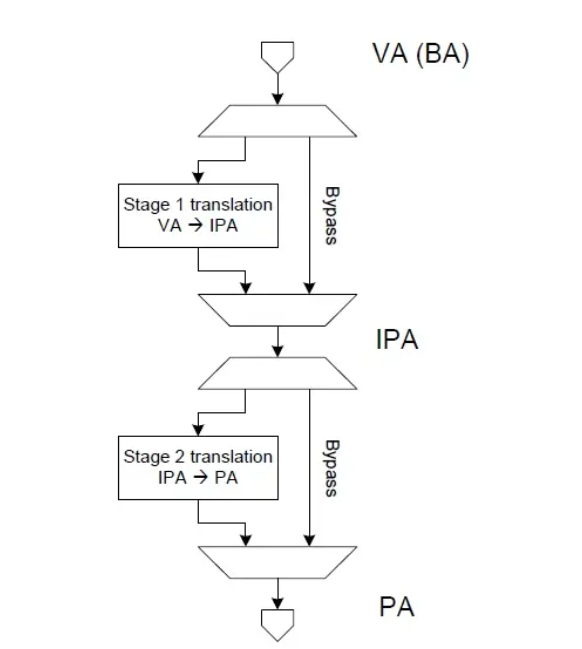
有两级页表，可以配置寄存器，来控制是否进行这一级的翻译。
还有SMMU enable开关，如果关上了，就相当于没有SMMU这个东西，不进行翻译。
| 术语 | 概念 |
|---|---|
| StreamID | 一个平台上可以有多个SMMU设备，每个SMMU设备下面可能连接着多个Endpoint， 多个设备互相之间可能不会复用同一个页表，需要加以区分，SMMU用StreamID来做这个区分( SubstreamID的概念和PCIe PASID是等效的) |
| STE | Stream Table Entry, STE里面包含一个指向stage2地址翻译表的指针，并且同时还包含一个指向CD（Context Descriptor）的指针. |
| CD | Context Descriptor, 是一个特定格式的数据结构，包含了指向stage1地址翻译表的基地址指针 |
有两个重要数据结构，STE和CD。
STE（stream table entry）：包含stage1初始化信息、CD表指针（CD中包含stage1的页表基地址和相关转换信息）、stage2的页表基地址以及相关转换信息（如果使能stage2的话）
数据格式
STE
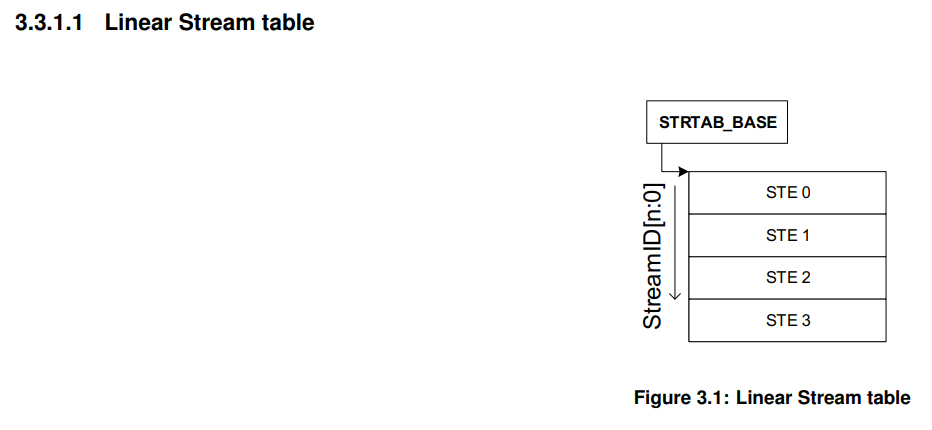
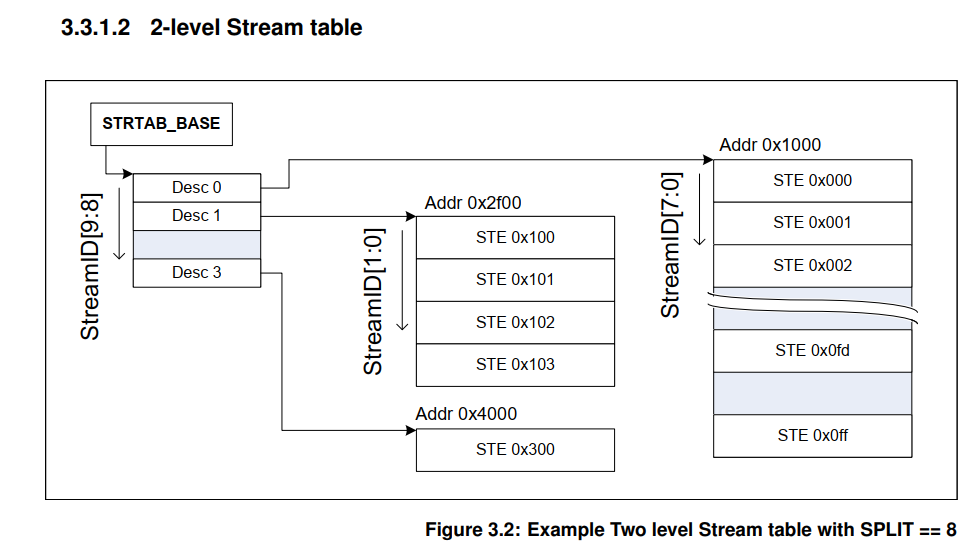
STE大小为64B。SMMU根据寄存器配置的STRTAB_BASE地址找到STE， STRTAB_BASE定义了STE的基地值， Stream id定义了STE的偏移。如果使用linear 查找， 通过STRTAB_BASE + sid * 64（一个STE的大小为64B）找到STE； 若使用2-level查找， 则先通过sid的高位找到L1_STD（STRTAB_BASE + sid[9:8] * 8, 一个L1_STD的大小为8B）, L1_STD定义了下一级查找的基地址，然后通过sid 找到具体的STE（l2ptr + sid[7:0] * 64）.
最终找到的STE如下所示，表中的信息包含属性相关信息， 翻译模式信息（是否 stream bypass, 若否，选择stage1, stage2或者stage1 + stage2翻译模式）。
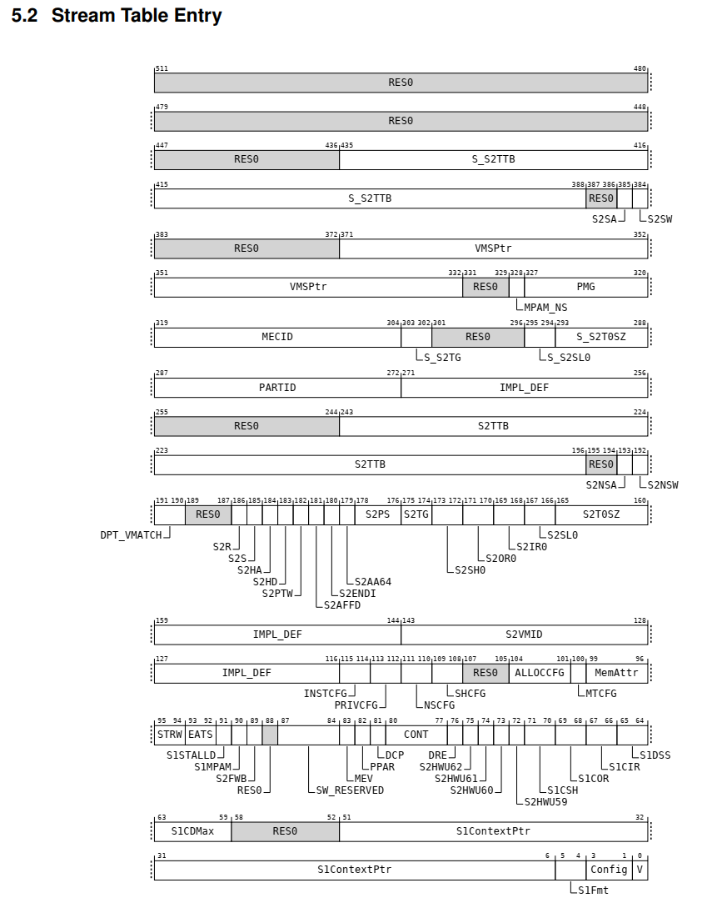
CD
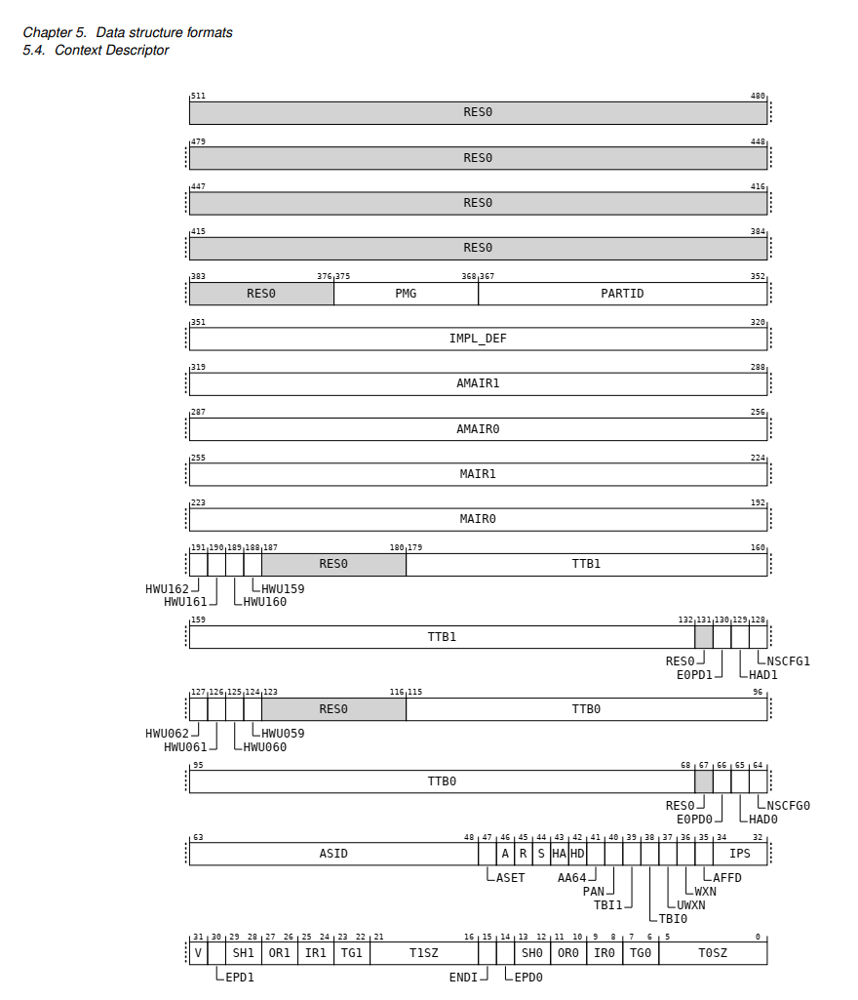
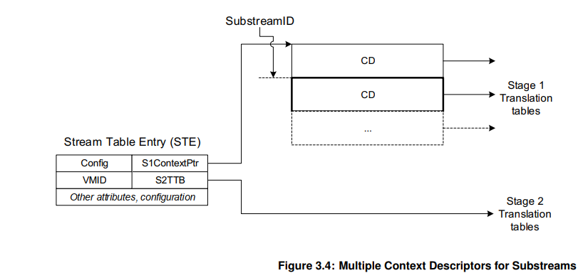
由上可知每个SubStreamID对应一个CD表，SubStreamID对应每个用户态空间地址，换句话说，每个涉及对应外设的进程，都对应一个SubStreamID。
SMMU command queue 与 event queue
系统软件通过Command Queue和Event Queue来和SMMU打交道，这2个Queue都是循环队列。 Command queue用于软件与SMMU的硬件交互，软件写命令到command queue, SMMU从command queue中 地区命令处理。 Event Queue用于SMMU发生软件配置错误的状态信息记录，SMMU将配置错误信息写到Event queue中，软件通过读取Event queue获得配置错误信息并进行配置错误处理。
streamID与substreamID
StreamID
StreamID is generated from the PCI RequesterID so that StreamID[15:0] ==RequesterID[15:0]
SubstreamID
The SubstreamID is equivalent to a PCIe PASID. Because the concept can be applied to non-PCIe systems, it has been given a more generic name in the SMMU. The maximum size of SubstreamID, 20 bits, matches the maximum size of a PCIe PASID.
c2k设计StreamID N是24，也就是StreamID[23:0]
StreamID[15:0]就是pcie的RequesterID[15:0].
StreamID[23:16]表示Root Complex，具体c2000上每个root complex对应的id是多少跟刘艺确认，由软件定义 此外:
SubstreamID 就是pcie的 PASID